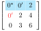
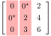
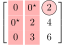

Munkres Algorithm For Assignment Problem: A Tutorial
1 Introduction
Munkres algorithm (or Hungarian algorithm) is very efficient to solve the assignment problem. However, I can't find a good tutorial from the internet (most of them are vague high-level description; some show the implementation without explanation), so I try to do it by myself. Here are some applications,
Example 1, you have \(n\) jobs for \(n\) workers, and each worker is qualified for a subset of jobs. It can be represented by a matrix, e.g.,
where each cell \(\boldsymbol{a}_{i,j}\) indicates whether worker \(i\) is qualified for job \(j\). Each job can only be assigned to at most one worker and each worker can only accept at most one qualified job. The problem is to assign as most jobs as possible to workers.
Example 2⚓, imaging you have a capacitive multitouch screen. At each frame (e.g., 120Hz), after detecting all the touches on the screen, you want to determine whether each touch detected in current frame is the same touch in previous frame (e.g., to draw a line between two if they are from same touch). To do that, you can use some metric to calculate the correlation between touches from current frame and previous frame, e.g.,
where \(c_{i,j}\) is the correlation between \(i^{th}\) touch in previous frame and \(j^{th}\) touch in current frame.
Then, the problem is to find one element from each row and each column, which maximizes the total correlation.
Example 3⚓, instead of a capacitive touch screen, now you are using radar installed on an self-driving vehicle to detect vehicles in front of you. And you want to determine whether the vehicles detected in current frame is same as the vehicles from the previous frame.
2 Munkres algorithm
The following tutorial is based on this and this. The main difference are
Python implementation with structure closer to the algorithm in original paper,
More explanation based on the original paper.
Without loss of generality, the \(N\times N\) cost matrix \(\boldsymbol{A}=\{a_{i,j}\geq 0\}\) is defined as
The problem is to find \(N\) distinct elements (none of them share the same row or column) to minimize the sum. It will be clear shortly for the cost matrix with negative values or to maximize the sum.
As described in the paper, the main algorithm is split into four steps:
2.1 Step 0
This is a preprocessing step:
Find the minimum of each row and subtract it from all elements of that row. It is easy to see that such processing will not change the solution. That is, a solution for the cost matrix after processing is also a solution for the cost matrix before processing. For example, if we add a constant \(c\) to first row
\(\boldsymbol{A}^\prime\) will have same solution as \(\boldsymbol{A}\), as the contribution from the 2nd item to any feasible solution is always same; that is, one element from its first row (i.e., \(c\)), one element from all the other rows (i.e., 0).
So, we can subtract/add constant to any row and column, which will not change the solution. There is one more constraint that after the processing all elements shall always be non-negative (positive or zeros, that's why we subtract minimum from each row). Such constraint is important, since in this case, if anytime we find a feasible solution with all zero elements in cost matrix, we are done (for the cost matrix after processing, 0 is the smallest sum we can get). For a cost matrix with negative values, we can subtract the minimum values from all elements. The resulting cost matrix will only have positive values or zeros, and its solution is same as the original cost matrix.
Mark the starred zeros. Starred zeros are distinct; that is, there are at most one starred zero in each row or column. Then, cover all the columns with a starred zero.
It is easy to see that for \(N \times N\) cost matrix, if we can find \(N\) starred zeros, we are done. Otherwise, go to Step 1.
defstep_zero(self):""" preliminaries step """# subtract minimum from each row """self.C=self.C-self.C.min(axis=1,keepdims=True)# mark the starred zero in C; each row and col will have maximum 1 startted zerorows,cols=self.C.shapeforrinrange(rows):forcinrange(cols):ifself.C[r,c]==0andself.row_cover[r]==0andself.col_cover[c]==0:self.M[r,c]=self.Zeros.STAR.valueself.row_cover[r]=1self.col_cover[c]=1returnself.cover_star()
2.2 Step 1
This step is to find uncovered zeros and prime it.
If there is no more uncovered zeros, go to Step 3, where we will create more zeros by subtracting/adding constant to rows and columns.
Otherwise,
if there is a starred zero in the same row as the current primed zero, uncover the column of the starred zero, and cover the row. It is easy to see that there is at most one primed zero in each row.
otherwise, go to Step 2 (we find a better sequence of starred zero to cover more rows/columns, more details in Step 2). The current primed zero is the only uncovered primed zero.
For the above example (Fig. 1), after this step, the first column will be uncovered, while the first row will be covered. The primed zeros will be

Fig.2. Primed zeros
And the primed zero in red is the uncovered primed zero.
defstep_one(self):""" find uncovered zeros and prime it """C_zeros=(self.C==0).astype(int)C_zeros_uncovered=C_zeros*(1-self.row_cover[:,np.newaxis])C_zeros_uncovered*=(1-self.col_cover)whileTrue:# find a uncovered zero# looks like np.argmax is fast than np.nozero, np.whererow,col=np.unravel_index(np.argmax(C_zeros_uncovered),C_zeros_uncovered.shape)ifC_zeros_uncovered[row,col]==0:# no uncovered zerosreturnself.Steps.STEP3# prime itself.M[row,col]=self.Zeros.PRIME.valueifself.star_in_row(row):# star in this row,col=self.find_star_in_row(row)# cover rowself.row_cover[row]=1# uncover the columnself.col_cover[col]=0C_zeros_uncovered[:,col]=C_zeros[:,col]*(1-self.row_cover)C_zeros_uncovered[row]=0else:self.uncovered_zero_prime=(row,col)returnself.Steps.STEP2
2.3 Step 2
This is the most complicated step. It is to find a better cover from the current zeros (primed and starred zeros), which can cover one more column or row. The first step is to construct a sequence \(S\) of alternating starred and primed zeros
\(z_0\): start from uncovered prime zero in Step 1
\(z_1\): find star zero in same column of \(z_0\)
\(z_2\): find prime zero in same row of \(z_1\)
...
It will be clear shortly why we need such sequence.
First, sequence \(S\) will stop ⚓. For example, if we order all primed zero by the order it gets assigned in Step 1, then order(\(z_2\)) < order(\(z_0\)) (Recall that \(z_1\), \(z_0\) are in same column, and uncovered, which has to be caused by \(z_2\); so such operation (uncover the column of \(z_1\)/\(z_0\)) shall happen before we prime \(z_0\)).
Second, sequence \(S\) will stop at a primed zero. For example, for \(z_1\), since the column of \(z_1\) is not covered (\(z_1\) and \(z_0\) shares the same column, so this column must be uncovered.), its row must be covered by a primed zero on the same row as \(z_1\) (as from the previous step, only a primed zero can uncovered a column and cover a row). Let's denote the last item (a primed zero) to be \(z_{2M}\).
Third, \(z_0\), \(z_2\), \(z_4\) ..., and \(z_{2M}\) are distinct (i.e., not share the same row or column). From Step 1, it is easy to see that they will not share the same row, since there are at most one primed zero on each row. If \(z_{2k}\) and \(z_{2l}\) shares the same column (\(k<l\)), there must be a starred zero in this column; otherwise the sequence \(S\) will stop when we first encounter \(z_{2k}\). Thus, \(z_{2k+1}\) and \(z_{2l+1}\) will be the same starred zero (Recall that at most one starred zero in each column), which means \(z_{2k+2}\) and \(z_{2l+2}\) are the same primed zero (at most one primed zero in one row). It conflicts with the observation that primed zeros in sequence \(S\) are ordered.
Thus, we can replace the starred zeros in the sequence \(S\) (\(z_1\), \(z_3\), ..., \(z_{2M-1}\)) with primed zeros (\(z_0\), \(z_2\), \(z_4\), ..., \(z_{2M}\)). Compared to the original starred zeros, the new starred zeros will have one more item.
Note that the sequence \(S\) may not contain all the original starred zeros. However, the new starred zeros are still distinct. For example, suppose \(z^\star\) is not in the sequence \(S\), then \(z^\star\) will not share the same column as (\(z_1\), \(z_3\), ..., \(z_{2M-1}\)). Thus, it will not share the same column as (\(z_0\), \(z_2\), ..., \(z_{2M-2}\)) (as \(z_1\) and \(z_0\) have the same column, and so on). \(z_{2M}\) will also not share same column as \(z^\star\), as there is no starred zeros in column of \(z_{2M}\).
Similarly, \(z^\star\) will not share the same row as (\(z_1\), \(z_3\), ..., \(z_{2M-1}\)). Thus, it will not share the same row as (\(z_2\), \(z_4\), ..., \(z_{2M}\)) (as \(z_1\) and \(z_2\) have the same row, and so on). \(z_{0}\) is the uncovered primed zero from Step 1; and there is no starred zero in that row.
For the above example (Fig. 2), the sequence \(s\) will be
\(z_0 \sim a_{1, 0}\)
\(z_1 \sim a_{0, 0}\)
\(z_2 \sim a_{0, 1}\)
Then unstar the starred zeros in the sequence \(S\) (i.e., \(z_1 \sim a_{0, 0}\)), and star the primed zeros in \(S\) (i.e., \(z_0 \sim a_{1, 0}\), \(z_2 \sim a_{0, 1}\)).
Now, we have 2 distinct zeros, which is better than we have before.
Clear the current covered rows/columns and cover all the columns with starred zeros

defstep_two(self):''' Find a better cover from current zeros '''# construct a sequence from the uncovered primed zero from step 1path_count=1path=np.zeros((self.nrow+self.ncol,2)).astype(int)path[path_count-1,:]=self.uncovered_zero_primewhileTrue:r=self.find_star_in_col(path[path_count-1,1])ifrisNone:breakpath_count+=1path[path_count-1,:]=[r,path[path_count-2,1]]c=self.find_prime_in_row(path[path_count-1,0])path_count+=1path[path_count-1,:]=[path[path_count-2,0],c]# unstar the starred zeros, and star the primed zeros in the sequenceforpinrange(path_count):ifself.M[path[p,0],path[p,1]]==self.Zeros.STAR.value:self.M[path[p,0],path[p,1]]=self.Zeros.NORMAL.valueelse:self.M[path[p,0],path[p,1]]=self.Zeros.STAR.value# cover the starred columnsreturnself.cover_star()
2.4 Step 3
This step is to generate more distinct zeros in the cost matrix by adding/subtracting constants to row and column, and at same time make sure all elements are not negative. Then return to Step 1.
The first step is to find the minimal value from all uncovered elements, i.e., \(v_m\). Then subtract \(v_m\) from each uncovered column and add \(v_m\) to each covered row. As discussed early, such processing will not change the solution, and
If \(a_{i,j}\) is not covered, then after processing \(a^\prime_{i, j} = a_{i, j} - v_m\) as column \(j\) is not covered.
If \(a_{i,j}\) is covered by a column only. The above processing will not impact such elements, so no change.
If \(a_{i,j}\) is covered by a row only (its column is not covered), it will first be decreased by \(v_m\) (its column is not covered), then increased by \(v_m\) (its row is covered); so no change.
If \(a_{i,j}\) is covered by a row and a column, then after processing \(a^\prime_{i, j} = a_{i, j} + v_m\) as row \(i\) is covered.
So it is easy to see that after the processing, all elements in cost matrix are still non-negative. And the current starred zeros and primed zeros will not be impacted by the above processing (stared and primed zero can not be covered by both its row and column). The good thing is that the processing will potentially create more distinct zeros (the smallest uncovered element in the cost matrix will be zero after the processing).
Let's check the impact of the above processing to sum of the cost matrix. Assuming there are \(n_c\) covered columns and \(n_r\) covered rows, the difference between the sums of the cost matrix after and before the processing is
Since \(N>n_c + n_r\) (otherwise, the solution is found), at each Step 3, the sum of the cost matrix will decrease by \(N(N-n_c - n_r)*v_m\), which means that the algorithm will stop eventually.
For the above example, the minimum of the uncovered elements is 2.

Subtract \(2\) to each uncovered columns, and return to Step 1.
defstep_three(self):""" subtract smallest value from uncovered cells to each uncovered cols, and add it to each covered rows. so the final result is always positive """# find the smallest value from uncovered cellsminval=self.find_smallest()# add it to covered rowsself.C+=self.row_cover[:,np.newaxis]*minval# subtract it from uncovered columnsself.C-=(1-self.col_cover)*minvalreturnself.Steps.STEP1
The above algorithm is for the solution to get the minimum sum. For the problem for maximum sum (e.g., for Example 2, we want to maximize the correlation sum.), we can easily convert it to a equivalent minimum sum problem by
multiple -1 to all elements,
subtract the resulting minimum value from all elements.
Sometime, the original cost matrix may not be square, e.g., in Example 3, the vehicle detected in previous frame may disappear in current frame (e.g., passed by us), or new car may be detected). In this case, we can append all zero rows/columns to make the cost matrix square. The resulting cost matrix will have the same solution as the original cost matrix, as for any feasible solution, the contribution of all zero rows/columns are same (i.e., 0).